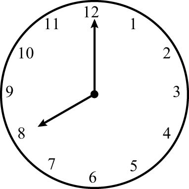

数字9的很多特点都可以扩展至其他数字。在使用弃九法时，我们实际上是用一个数字被9除得到的余数来代替这个数字。用余数代替某个数字的做法，对于大多数人而言并不陌生。从学会看时间开始，我们就在这样做。例如，如果时钟指向8点钟（无论是上午8点还是晚上8点），那么3个小时之后是几点？15个小时之后呢？27个小时之后呢？9个小时之前呢？尽管你的第一反应可能是11、23、35或者 –1，但是就时间而言，这些都表示11点。这是因为这些时间点之间相差12个小时或者12个小时的倍数，数学界将其表示为：
11≡23≡35≡–1（mod 12）

一般而言，如果a、b之间的差是12的整数倍，那么我们说a ≡ b（mod 12）。同理，如果a和b被12除的余数相同，我们也说a ≡ b（mod 12）。推而广之，对于任意正整数m，如果a和b之间的差是m的整数倍，那么我们说a与b对模[1]m同余，记作a ≡ b（mod m）。同理，如果a = b + qm，q是整数，那么a ≡ b（mod m）。
同余的好处是它们彼此之间可以通过加法、减法和乘法等进行模运算，这与普通方程式几乎没有区别。如果a ≡ b（mod m），c是任意整数，那么a + c ≡ b + c，且ac ≡ bc (mod m)成立。如果a ≡ b（mod m），且c ≡ d（mod m），那么a + c ≡ b + d，且ac ≡ bd (mod m)。
例如，14 ≡ 2且17 ≡ 5（mod 12），所以14×17 ≡ 2×5（mod 12），因为238 = 10 + (12×19)。有了这条规则之后，我们就可以对同余进行升幂处理。如果a ≡ b（mod m），就有以下这条幂法则：
a2 ≡ b2，a3 ≡ b3 ，…，an ≡ bn（mod m）
其中，n是任意正整数。
模运算为什么成立呢？如果a ≡ b（mod m），且c ≡ d（mod m），那么a = b + pm，c = d + qm，p、q是整数。于是，a + c = (b + d) +(p + q) m，所以，a + c ≡ b + d（mod m）。根据FOIL法则，有：
ac = (b + pm) (d + qm) = bd + (bq + pd + pqm) m
因此，ac与bd的差是m的倍数，也就是说ac ≡ bd（mod m）。同余关系a ≡ b （mod m）与自身相乘就会得到a2 ≡ b2（mod m），继续与自身相乘就会推导出幂法则。
正是因为这条幂法则，使得十进制下的9变成了一个非常特殊的数字。由于10 ≡ 1 (mod 9)，根据幂法则，10n ≡ 1n ≡ 1 (mod 9)。因此，像3 456这样的数字满足：
3 456 = 3×1 000+4×100+5×10+6
≡ 3×1 + 4×1 + 5×1 + 6 = 3 + 4 + 5 + 6 (mod 9)
由于10 ≡ 1 (mod 3)，因此我们把某个数字的各个数位上的数字相加，就可以判断出这个数字是不是3的倍数（或者说出该数被3除的余数）。在不同的进制下，比如十六进制（常用于电气工程和计算机科学），由于16 ≡ 1 (mod 15)，因此我们可以把某个数字的各个数位上的数字相加，判断这个数字是不是15（或者3、5）的倍数，或者说出该数字被15除的余数。
现在，我们回到十进制。判断一个数字是不是11的倍数，有一个非常简便的方法。它的依据是：由于10 ≡ –1 (mod 11)，10n ≡ (–1)n(mod 11)，所以102 ≡ 1 (mod 11)，103 ≡ (–1) (mod 11)，以此类推。以3 456这个数字为例，该数字满足：
3 456 = 3×1 000 + 4×100 + 5×10 + 6
≡ –3 + 4 – 5 + 6 = 2 (mod 11)
也就是说，3 456被11除的余数是2。因此，判断一个数字是不是11的倍数的一般规则是：当且仅当某个数字各个数位上的数字交替进行减法和加法运算后的结果是11的倍数（例如：0，±11，±22，…）时，这个数字就是11的倍数。31 415是11的倍数吗？通过计算3 – 1 + 4 – 1 + 5 = 10，我们知道它不是11的倍数。但是，31 416这个数字对应的计算结果是11，因此它肯定是11的倍数。
事实上，在生成和验证ISBN码（国际标准书号）时经常会用到与11有关的模运算。假设你的书号是一个十位数（2007年之前出版的图书大多如此），书号的前几位数字表示该书的国别、出版者和书名，但是最后一位数（校验号）的作用是让这些数字满足某种特殊关系。具体来说，如果这个十位数书号符合a–bcd–efghi–j的形式，那么j的作用是确保这个书号满足以下关系：
10a + 9b + 8c + 7d + 6e + 5f + 4g + 3h + 2i + j ≡ 0 (mod 11)
例如，我写作的《心算的秘密》（Secrets of Mental Math）出版于2006年，它的书号是0–307–33840–1。由于154 = 11×14，因此：
10×0 + 9×3 + 8×0 + 7×7 + 6×3 + 5×3 + 4×8 + 3×4 + 2×0 + 1
= 154 ≡ 0 (mod 11)
也许你有一个疑问：如果根据这个规则，校验号必须是10，应该怎么办呢？在这种情况下，校验号会变成Ⅹ，因为这个罗马数字的意思就是10。有了这个特点之后，如果在输入ISBN时输错了某个数字，系统就可以自动检测出来。例如，如果我的书号第三位数被输错，最后的检验结果就会产生8的倍数的偏差，即偏差为±8，±16，…，±80。但是，由于所有这些数字都不是11的倍数（11是质数），因此发生偏差后的检验结果也不可能是11的倍数。事实上，利用代数运算我们可以方便地证明，如果其中两位数字发生错位，系统是可以检验出这个错误的。例如，其他数位都没有错误，但是c和f这两个数位上的数字彼此交换了位置，那么计算结果的偏差全部来自c和f这两项。计算结果本应是8c + 5f，而现在的结果是8f + 5c。两者之间的差是(8f + 5c) – (8c + 5f) = 3 (f – c)，它不是11的倍数。因此，新的计算结果也不是11的倍数。
2007年，出版界启用了13位ISBN编码系统，所有的书号都是十三位数，而且采用的是模为10的模运算，而不是之前的模为11的模运算。在这种新的体系下，书号abc–d–efg–hijkl–m必须满足：
a + 3b + c +3d + e + 3f + g + 3h + i + 3j + k + 3l + m ≡ 0 (mod 10)
例如，本书英文版的ISBN是978–0–465–05472–5。简便的验证方法是把奇数位与偶数位上的数字分开，即：
(9 + 8 + 4 + 5 + 5 + 7 + 5) + 3×(7 + 0 + 6 + 0 + 4 + 2)
= 43 + 3×19 = 43 + 57 = 100 ≡ 0 (mod 10)
13位ISBN编码系统可以检测出任何单个数位的错误和大多数（不是全部）连续项位置颠倒的错误。例如，在上面的例子中，如果最后的三位数725误写成275，系统就无法检测到这个错误，因为错位之后的计算结果是110，也是10的倍数。目前，条形码、信用卡和借记卡都采用了模为10的号码验证系统。模运算还在电路和互联网金融安全等方面发挥着重要作用。